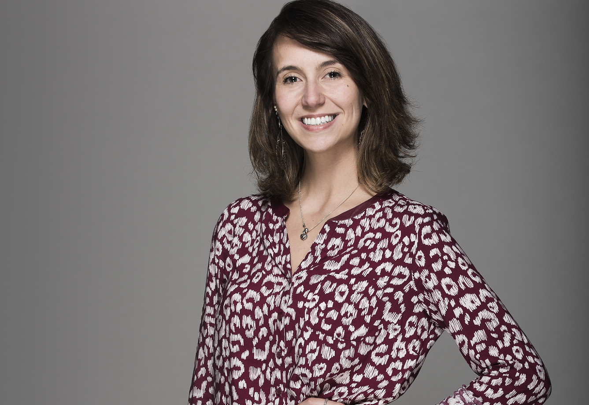
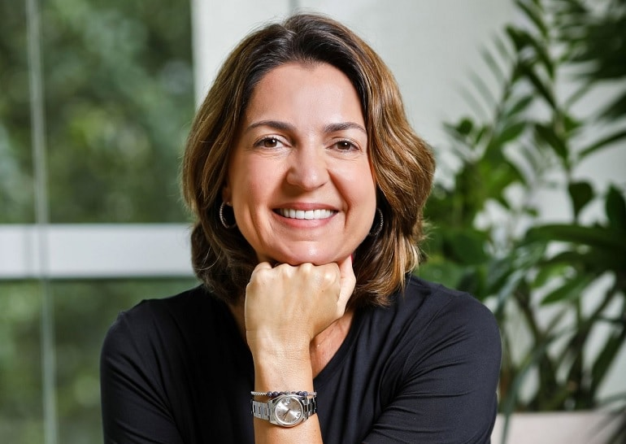
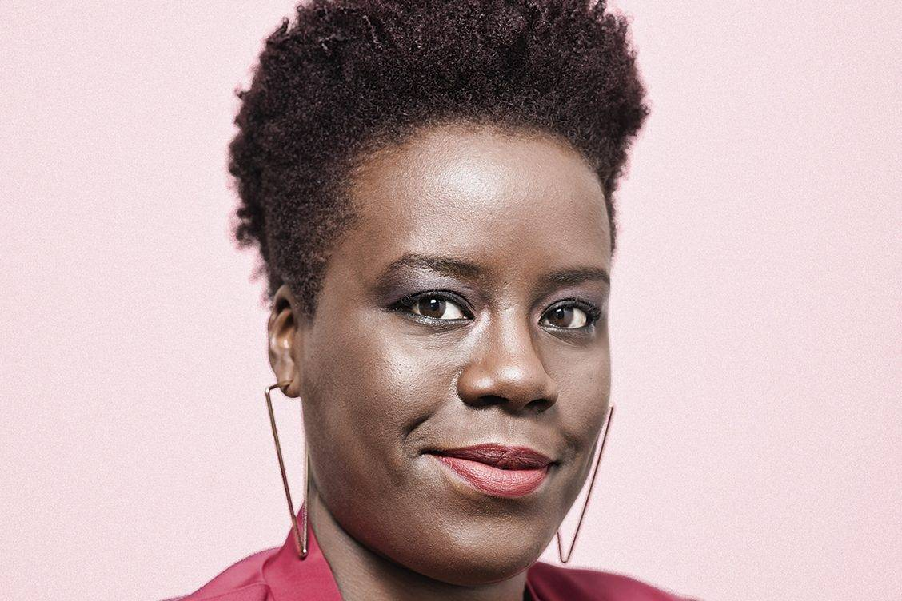
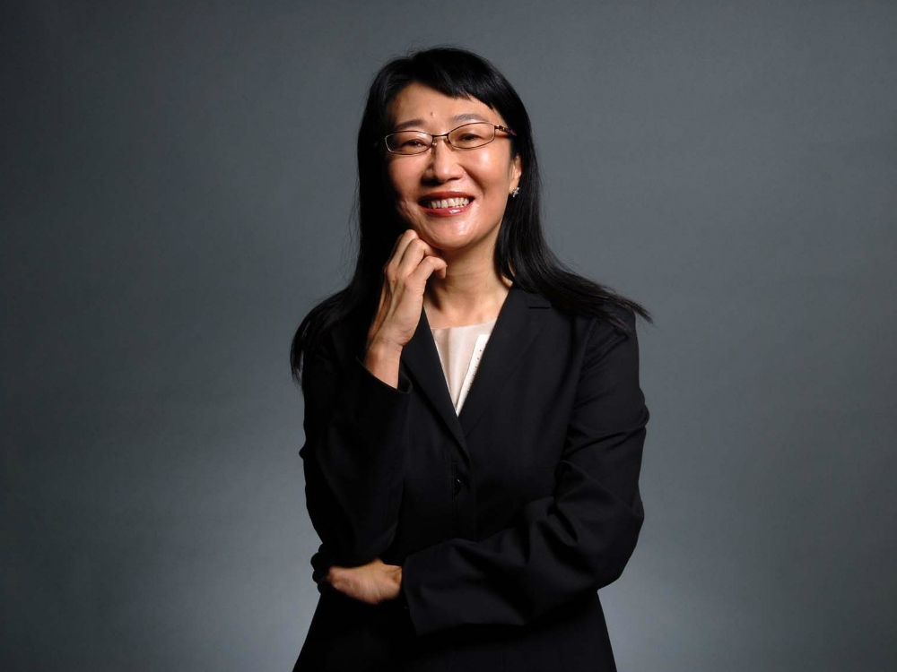
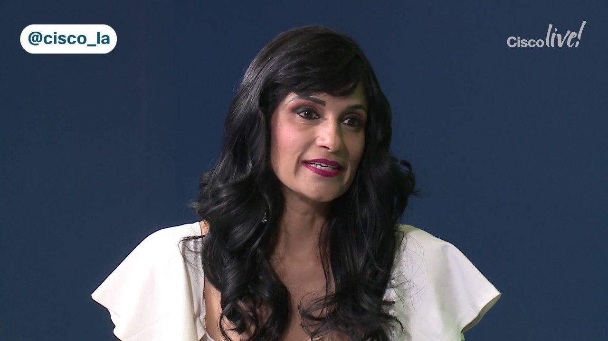

A executiva norte-americana tem uma vasta trajetória na indústria de TI. Sua carreira está marcada por passagens
em gigantes da indústria como
Apple, Yahoo! e LinkedIn. Formada em publicidade com mestrado em ciências da informação, Sarah gerenciou equipes
dos mais diversos tamanhos,
incluindo até mais de 250 colaboradores sob sua gestão. Ao longo da sua carreira, a executiva tem objetivado
aprimorar a construção de produtos
para atender pessoas com desafios físicos ou cognitivos.
A empreendedora autodenominou-se como “Youthquake”, uma vez que com sua juventude e conhecimento revolucionam a
indústria de TI. Camila é referência mundial na luta por mais mulheres na tecnologia e letramento tecnológico.
Conquistou o prêmio Women
of Vision 2015 sendo a primeira estudante latina a receber tal honra. Fundadora do blog Mulheres na Computação,
falou em um TEDx num estádio de
futebol e viajou o Brasil ensinando mais de 15 mil jovens a criar aplicativos na Amazônia e em comunidades do
Rio de Janeiro.

Paula possui mais de 23 anos de experiência no mercado. Ela começou sua carreira em Marketing na Whirlpool em
1992 e depois de sete anos foi
para a Telefônica como gerente de Grupo de Produtos. Paula deixou a Telefônica em 2002 para iniciar sua
trajetória na Microsoft como gerente
de Vendas para Pequenas e Médias Empresas. Em seus dez anos na Microsoft, ocupou diferentes posições, sendo a
última a de presidente da empresa
no Brasil. Recentemente, foi promovida a vice-presidente de Vendas, Marketing e Operações Latam da Microsoft.

A executiva é especializada em Neuropsicologia pelo Centro de Diagnóstico Neuropsicológico (CDN) na Universidade
Federal de São Paulo (UNIFESP).
Psicóloga, com atuação de mais de 12 anos nas áreas de Gestão de Carreira, Outplacement, Assessment, Orientação
Profissional, Treinamento e
desenvolvimento em empresas de médio e grande portecomo consultora de Inclusão de Pessoas com Deficiência –
Instituto Aprender, Catho, Santander,
Work Telemarketing, EMS, Elétrica PJ e Itaú.

Cher Wang é considerada uma das mulheres mais poderosas e bem-sucedidas de tecnologia. É co-fundadora e
presidente da HTC Corporation e fabricante
de chipsets VIA Technologies.Em março de 2015 assumiu o cargo de CEO de Peter Chou e retornou às operações
diárias da HTC. Em 2017, a HTC e o
Google anunciaram um acordo de cooperação de US $ 1,1 bilhão, e em agosto de 2012, Wang foi nomeada #56 na lista
da Forbes das 100 mulheres mais
poderosas do mundo.

Aruna tem passagem por grandes players da indústria de TI como IBM, Hewlett Packard (HP) e CA Technologies.
Atualmente, a executiva atua na Cisco
como vice-presidente global. Formada em ciências da computação pelo Instituto de Tecnologia de Bangalore, mestre
em engenharia da computação e MBA
em Administração e Marketing, Aruna conta com uma trajetória de mais de 20 anos na indústria de TI.
